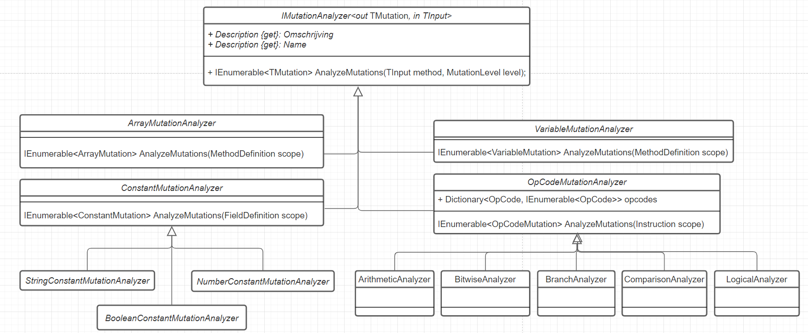

Thanks for having interest to contribute to Faultify! This book goes into some technical implementation details of this library. Feel free to join the Discord server if you have any questions.
IL-Inspectors
Those tools can be used to inspect IL-code.
- https://github.com/icsharpcode/ILSpy
- https://github.com/dnSpy/dnSpy (allows manual editing of IL)
Testing
All mutations are tested in Faultify.Tests.
Code that is to be mutated has to be compiled such that this compiled assembly can be read by Mono.Cecil.
There is a folder TestSource that contains
various targets whom are compiled at run time by the unit tests.
For new mutations:
- Add a test target or update an existing one.
- Write a unit test that loads this target and mutates it (see the existing unit tests)
Mutation Tesing
Fault Insertion, Fault Injection, Mutation Testing, Mutation Injection are terms that refer to the same subject. With mutation injection, one introduces changes to the logic of a codebase. If a logic mutation (change) is introduced and a test still succeeds then the test may not be fully reliable. This fact can be used to calculate determine the unit test quality.
What Is a Mutation
A mutation is a change in operators, constant values, or variable declinations. Examples of possible mutations are:
- Arithmetic (+, -, /, *, %) Operators.
- Assignment Expressions (+=, -=, /=, *=, %=, — , ++).
- Equivalence Operators (==, !=).
- Logical Operators (&&, ||).
- Bitwise Operators (^,|, &).
- Branching Statements (if(condition), if(!condition)).
- Variable Literals (true, false).
- Mutate Constant Fields (string, number, boolean).
The operators above should be mutated to a variant that invalidates the logic. For example, a ‘+’ can be changed to a ‘-’, ‘<’ to a ‘>’, ‘true’ to a ‘false’ etc… With some types of mutations, it may be possible that the mutation results in the same value such as ‘1 + 1’ to ‘1*1’, therefore for these mutations all variants ‘+, -, *, /’ should be performed for the best result.
// Original
public int Add(a, b) {
return a + b;
}
// Mutation 1
public int Add(a, b) {
return a - b;
}
// Mutation 2
public int Add(a, b) {
return a * b;
}
Infinite Loop Mutation
A mutation, such that you get ‘while(true)’, is able to cause an infinite loop. This is an issue because it will cause the test session to run infinitely. This can be tackled in several ways:
- An initial test run is performed to calculate the run time of all unit tests without mutations, then this metric is used as a process timeout value.
- Before the test run is performed, it is validated whether a mutation can cause an infinite loop.
This is a faster solution because you do not have to interrupt a test process and start it again if an infinite loop mutation occurs.
However, this can be very difficult to detect in advance for the following reasons:
- A loop can contain many conditions that can potentially interrupt the loop using a return or break. All conditions have to be checked in order to know whether a mutation causes an infinite loop.
- There can be various loops with different mutations. It is relatively easy to detect that a
while(false)towhile(true)mutation results in an infinite loop. However, this is way more difficult for awhile(a < b)to awhile(a > b)mutation. Besides infinite loops, pseudo-infinite is also an edge case that should be taken into account. A pseudo-infinite loop means that a loop takes some time to run however it is finite. The for loop mutation ‘++’ to ‘- -’ will flip the iteration direction which can take a long time (usually int.Max times) before it completes.
Next to an ordinary infinite loop there is also a possibility for infinite recursive calls to be created. Though, those will be handled the same as time out mutations.
Mutation Technique
There are two main ways to mutate code logic:
- At the source code level (modifying syntax trees and compile the mutations)
- At the byte code level (modifying the byte code/CIL in the compiled assembly).
Byte-code vs Source-code
I think that these two methods both have advantages as disadvantages. And that they are both valid ways to implement mutation testing. I did some Benchmark on a small project, both Stryker and Faultify seem to be performing equally well. Though there is still optimizing work to be done for Faultify.
Sourcecode with Mutation Switching:
Pros:
- Recompilation is not required when using mutant switching though this implies that for any new mutations or edits to current mutations the entire assembly is to be recompiled.
- The exact mutation location/line can be shown to users.
- Mutation coverage can be easily calculated.
- Its easier to run mutation test runs in parallel compared to byte-code.
Cons
- Control over individual mutations is limited since mutations can not be injected without recompilation at runtime.
- Constant, Method Names, Access modifiers mutations are impossible.
- With some mutations compile errors can be generated.
Byte-Code
Pros:
- Recompilation is not required.
- Integrates with all .NET languages working on CIL.
- More flexibility and control over mutations since mutations can be injected without recompilation at runtime.
- Constant, Method Names, Access modifiers mutations are possible.
- Detailed control since only required mutations can be injected; This is useful when inspecting it with ‘ILSPY’ of ‘DNSPY’.
- There is a lot of flexibility in having access to IL-code.
Cons
- It is more difficult (not impossible) to show the exact mutation location/line since IL-code does not have code-lines.
- Some mutations like array mutations require complex IL-structures.
- It's more difficult (not impossible) to run mutation test runs in parallel compared to source-code.
- Calculating code coverage for individual mutations is next to impossible, therefore something like method-based coverage is sued in Faultify.
Source Code Mutations
This technique modifies source code and compiles mutations into the binary. This is often accomplished with the C# syntax tree.
Mutation Switching
If mutations are performed at the source code level then the code must be compiled to a binary before the test can be run with those mutations. In a large codebase, there can easily be thousands of mutations. If the source code is to be recompiled for each mutation the process will become extremely slow. Therefore, the source code technique is often used with ‘Mutation Switching’/’Mutant schemata’. In short, this means that all mutations are compiled into the binary. The test process will then turn the mutations on or off with, for example, an environment variable. This is an example of how a ‘+’ is mutated to a ‘-’ and ‘*’ looks like:
public int Add(int a, int b) {
if (Environment.GetEnvironmentVariable("ActiveMutant") == 0) {
return a - b;
} else {
return a * b;
}
}
Thus, the test process can set the ‘ActiveMutant’ environment variable to ‘0’ to execute the ‘-’ and to 1 for ‘*’.
Byte Code Mutations
The advantage of byte code manipulation is that the mutated source code does not need to be recompiled and not all mutations need to be injected ahead of time. For Faultify we use ‘Mono.Cecil’. This is an excellent library for manipulating ‘IL-CODE (CIL)’. A major drawback I have encountered is that the library is very poorly documented which makes it difficult to get started. ‘Mono.Cecil’ is made up of the following structure:

A module is a compiled assembly, the types are classes for example, and these classes have methods, properties, and fields. On these levels, as described earlier, mutations can be performed. Let’s mutate the following method:
public int Addition(int lhs, int rhs)
{
return lhs + rhs;
}
Code Mutation Example

You can see the IL code of the ‘Addition’ method inspected with ‘Il-Spy’. Instruction IL_0003 has the ‘add’ opcode. If we change this to ‘sub’ then the operation here becomes a subtraction instead of addition (dn-spy can be used for editing IL-code manually). The following image shows the ‘add’ to ‘sub’ motion with ‘Mono.Cecil’:

Here you can see that a ModuleDefinition has many TypeDefinitions and that the type has many MethodDefinitions who on its turn has Instructions.
We want to mutate the ‘add’ opcode to ‘sub’ opcode.
For an extensive view on the meaning and edge cases of opcodes checkout the Wikipedia and Microsoft pages.
Edge Case Comparison Operators
There are many paths leading to Rome. This is the same for comparing values in IL-Code. This is demonstrated in the following list with the branching comparison variant and the comparison only variant (see Wikipedia for their meaning).
- blt: The effect is identical to performing a clt instruction followed by a brtrue branch to the specific target instruction.
- bgt: The effect is identical to performing a cgt instruction followed by a brtrue branch to the specific target instruction
- bge: The effect is identical to performing a clt instruction (clt.un for floats) followed by a brfalse branch to the specific target instruction.
- beq: The effect is the same as performing a ceq instruction followed by a brtrue branch to the specific target instruction.
It turns out that the compiler will usually optimize control flow by translating a boolean operator like ‘<’ into its IL complement branching instruction (clt). Hence it can be the case that different compilers generate different IL-code. My compiler will always generate the comparison operator (clt) however on another PC it might as well use the branching variant (blt). This scenario might confuse one if certain mutations don't seem to be working. This Microsoft article goes into this issue deeper.
Faultify supports any mapping and will handle this edge-case. For testing purposes there is a utility written that is able to force the branching or comparison variant.
Analyzers
An analyzer looks at the bytecode, checks what kind of mutations can take place,
and returns the possible mutations (see next section) to the caller.

An analyzer has two generics: TMutation and TInput.
TMutation is the mutation type which contains metadata about the possible mutation and can execute and/or undo itself.
TInput is the scope where the mutation check will be made.
The scope is a type of Mono.Cecil and can for example be a Method/FieldDefinition or Instruction.
- In the case of opcode mutations, the scope is an 'Instruction' (e.g. return 1 + 1) ,
- in the case of an array mutation, the scope is a 'Method Definition',
- in the case of a constant field mutation, the scope is a 'FieldDefinition'.
Mutation Level: This level determines what mutations are executed during a test run.
OpCode Mutation Analyzer
This mutation analyzer looks at what possible mutations there are in the opcode of an instruction.
An instruction is a statement like 'a = 1 + 2'.
On this instruction the '+' can be changed to '-, /, *, %'.
There are 4 different opcode mutation analyzers.
Namely an analyzer for arithmetic operations (/, *), bitwise operations (^, |), branch (if) operations and comparison operations (<, >).
For many opcodes, one or more mutations are possible, therefore an 'IEnumerable
Constant Mutation Analyzer
This mutation analyzer looks at what possible mutations can be performed on a constant field. There are different types of constant fields with different ways of mutation. An integer can be mutated with a random number, a string with a random string and a boolean should be inverted.
Array Mutation Analyzer
This mutation analyzer looks at the possible mutations on arrays in a method body. There are different arrays, different ways to declare and modify them. An array can be:
- Modified
- Emptied
- Resized
There are:
- Arrays passed as parameters
- Inline initialized arrays (
new {1, 2, 3 }) - Index initialized arrays
- Index changes
Variable Analyzer
The variable analyzer is able to mutate literal variables such as false to true, 1 to 2 etc..
Analyzers
An analyzer looks at the bytecode, checks what kind of mutations can take place,
and returns the possible mutations (see next section) to the caller.
An analyzer has two generics: TMutation and TInput.
TMutation is the mutation type which contains metadata about the possible mutation and can execute and/or undo itself.
TInput is the scope where the mutation check will be made.
The scope is a type of Mono.Cecil and can for example be a Method/FieldDefinition or Instruction.
- In the case of opcode mutations, the scope is an 'Instruction' (e.g. return 1 + 1) ,
- in the case of an array mutation, the scope is a 'Method Definition',
- in the case of a constant field mutation, the scope is a 'FieldDefinition'.
Mutation Level: This level determines what mutations are executed during a test run.
OpCode Mutation Analyzer
This mutation analyzer looks at what possible mutations there are in the opcode of an instruction.
An instruction is a statement like 'a = 1 + 2'.
On this instruction the '+' can be changed to '-, /, *, %'.
There are 4 different opcode mutation analyzers.
Namely an analyzer for arithmetic operations (/, *), bitwise operations (^, |), branch (if) operations and comparison operations (<, >).
For many opcodes, one or more mutations are possible, therefore an 'IEnumerable
Constant Mutation Analyzer
This mutation analyzer looks at what possible mutations can be performed on a constant field. There are different types of constant fields with different ways of mutation. An integer can be mutated with a random number, a string with a random string and a boolean should be inverted.
Array Mutation Analyzer
This mutation analyzer looks at the possible mutations on arrays in a method body. There are different arrays, different ways to declare and modify them. An array can be:
- Modified
- Emptied
- Resized
There are:
- Arrays passed as parameters
- Inline initialized arrays (
new {1, 2, 3 }) - Index initialized arrays
- Index changes
Variable Analyzer
The variable analyzer is able to mutate literal variables such as false to true, 1 to 2 etc..
Analyzers can be used separately from Faultify.
They are able to provide the user mutations.
The reader can look at AssemblyMutator for inspiration.
This is the abstraction that Faultify uses to analyze for mutations.
Implement Custom Analyzer
To implement your own Analyzer there are a couple of steps:
- Implement (or use existing)
IMutation. - Implement instance of
IMutationAnalyzer.
Implement IMutation
The mutation, as shown in the previous chapter, is responsible for performing the mutation. Implement this to your use-case.
public class CustomMutation : IMutation
{
public OpCode OriginalValue { get; set; }
public OpCode NewValue { get; set; }
public Instruction InstructionReference { get; set; }
public void Mutate()
{
InstructionReference.OpCode = NewValue;
}
public void Reset()
{
InstructionReference.OpCode = NewValue;
}
}
Faultify provides a set of IMutation implementations that serve some general goals.
Implement Analyzer
IMutationAnalyzer has two generic parameters.
- The first one indicates the mutation type that is returned if the analyzer detects this mutation kind.
- The second one indicates in which scope the mutation can be found.
The scope should be a type from
Mono.Cecilsuch as:MethodDefinion,Instruction,FieldDefinition,TypeDefinition,AssemblyDefinition.
The general idea is that the analyzer inspects this scope for some possible mutations and returns the generic mutation.
In the following example, an analyzer that searches for add to sub mutations in the Instruction scope is demonstrated:
public class CustomMutationAnalyzer : IMutationAnalyzer<CustomMutation, Instruction>
{
public string Description => "Addition to subtraction analyzer.";
public string Name => "Addition to Subtraction";
public IEnumerable<CustomMutation> AnalyzeMutations(Instruction field,
MutationLevel mutationLevel)
{
if (field.OpCode.Code == Code.Add)
{
yield return new CustomMutation() {OriginalValue = field.OpCode, NewValue = OpCodes.Sub};
}
}
}
Use Analyzer
var analyzer = new CustomMutationAnalyzer();
using var assembly = ModuleDefinition.ReadModule("assembly.dll");
var mutations = assembly.Types
.SelectMany(x => x.Methods)
.SelectMany(x => x.Body.Instructions)
.SelectMany(instruction => analyzer.AnalyzeMutations(instruction, MutationLevel.Detailed).ToList());
foreach (var mutation in mutations)
{
mutation.Mutate();
// do some stuff
mutation.Reset();
}
After mutation or resetting a mutation back to original
one has to write the ModuleDefinition back to the file system.
Otherwise, the mutations are just purely performed in memory.
Assembly Mutator
The AssemblyMutator can be used to analyze all kinds of mutations in a target assembly.
It can be extended with custom analyzers.
Tho an extension must correspond to one of the following collections in AssemblyMutator:
- ArrayMutationAnalyzers (
IMutationAnalyzer<ArrayMutation, MethodDefinition>) - ConstantAnalyzers (
IMutationAnalyzer<ConstantMutation, FieldDefinition>) - VariableMutationAnalyzer (
IMutationAnalyzer<VariableMutation, MethodDefinition>) - OpCodeMutationAnalyzer (
IMutationAnalyzer<OpCodeMutation, Instruction>)
If you add your analyzer to one of those collections then it will be used in the process of analyzing.
Unfortunately, if your analyzer does not fit the interfaces, it can not be used with the AssemblyMutator.
Then you would have to create some kind of AssemblyMutator for yourself.
Test Process Overview
The main test process overview looks like this:

The test process from Faultily looks like this:

- Build: This is the initial project build to determine if the project compiles and make sure all assemblies are on their place.
- Inject Coverage: Here the test coverage functions are injected.
- Coverage Test Session: This initial test session determines: 1) Which tests cover what mutations 2) Test duration used for the real test runs.
- Rebuild: Rebuilds the project to remove all injected test code.
- Generate Test Session: Generate the test runs and binpack the testruns to run multiple mutations at once.
- Run Test Sessions: Run the test sessions in serial (un the future this will be parallel).
- Generate Report: Generate a report from all test results.
Optimisation
Dotnet test is used for executing tests. Dotnet test has a process startup/shutdown overhead time of about 1 second. For example, take 2000 mutations, this will take 2000 seconds (33 minutes) for the process management only. Therefore optimizations are essential for a well-functioning mutation tool.
Faultily Has Implemented:
- Mutation Bin Packing
- Mutation Levels
- Run Mutations in Parallel
Faultily Will Support:
- Memory Mapped Files
Run Tests from Memory
‘dotnet test’ is a wrapper over ‘vs-test-console’ which are both external processes.
In an ideal scenario, you would want to be able to load unit tests into memory and then run them from code.
This can save about 1 second per test run. As far I was able to find out vsconsole can only be used as an external process (VsConsoleWrapper).
However, it might be possible for Nunit to be run directly from code.
Though that will limit the support for other test frameworks.
Memory Mapped Files and or Ramdisk
Memory-mapped files (a really amazing undervalued technique) and/or a ramdisk makes use of RAM memory allowing for very fast file reading/writing. The ramdisk can be used to run the entire test process and the memory-mapped files can be used for the assemblies under mutation.
Mutation Bin Packing
A mutation can cause a test to fail or to succeed, so it is impossible to mutate two mutations that are covered by a test at the same time. If you did, there is no way to tell which mutation caused the test to fail. This scenario is a perfect bin-packing problem. The test is the bin and the mutation is the packet. Each test can have only one mutation at a time and you can run one test within a test session. Following that algorithm, multiple mutations can be performed at the same time. In order to implement this algorithm, one has to measure code coverage.
Run Mutations in Parallel
An assembly is mutated and the tests have a reference to this assembly. It is not possible to run multiple test sessions because they would mutate the same assembly. In addition, the CLR locks the assemblies of a test process. To use multiple processes, the tests and assemblies under test should be duplicated so that each test process has its own assembly files. Thus, this implies that the number of threads is equal to the number of duplications of the binaries.
Mutation Level
With some types of mutations, it may be possible that the mutation results in the same value such as ‘1 + 1’ to ‘1*1’, therefore for these mutations all variants ‘+, -, *, /’ should be performed for the best result. Though for large projects testing all variants is time consuming and maybe not worth it. Therefore the test session could use mutation levels like: Detailed, Medium, Simple to indicate which depth to use for testintg.
Coverage
Faultify measures code coverage by injecting a static register function in both the unit test and all methods from the assembly under test. When the code coverage test run is performed those static functions are called. First, the unit test that runs registers its name after that all methods called by this unit test will register their ‘Entity Handle’. After this run, we can exactly see what unit tests covered which methods. Difficulties are:
- Since unit tests can cover code behind interfaces it's impossible to use reflection to test code coverage.
- To know whether a mutation is covered we need to somehow identify this mutation. We had complications doing so, instead, we register only the method entity handle. This entails that test coverage is method based not mutation-based which implies that more mutations will be performed.

When running the test process the code will do something like the following:
- Run Unit Test
- Register name from unit test
- Run method that is tested by unit test.
- Register method name.
Those results are written to: coverage.bin.
At the end of the test process this data is used by faultify to binpack the tests with mutations (see above).
DataCollector
The test data collectors are used to handle events from the test host. With those events Faultify can do useful things.
TestDataCollector: Collects the test status from running tests and writes them totest_results.bin.CoverageDataCollector: Filters thecoverage.binsuch that only the tests it saw will remain in the file.
The reason why a custom byte format is used instead of json is that within a DataCollector it was not possible to use a Json library.